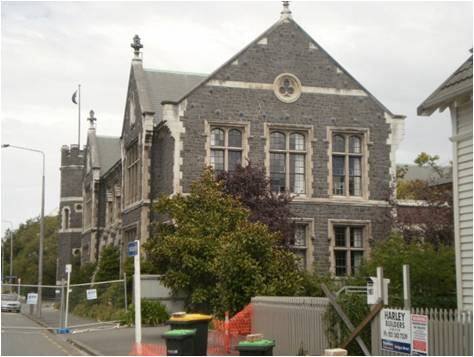
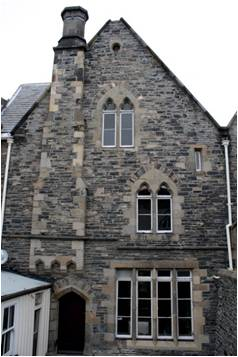

Basalto [SPBA]
El basalto es una roca de grano fino de color oscuro , ígnea volcánica dura y densa. Los cristales minerales individuales son típicamente difíciles de ver a simple vista, aunque algunos tipos pueden contener cristales más grandes, o puede tener agujeros que están vacíos (burbujas ) o lleno de otros minerales. Los basaltos son generalmente de color negro o gris oscuro y se pueden pulir bien. Como resultado , no se raya con facilidad por objetos metálicos. El basalto es de uso frecuente para la pavimentación y ocasionalmente para la construcción de muros.

Edificio de mampostería de piedra - las paredes tienden a ser una mezcla de basalto y traquita piedras con variación en el tamaño del bloque y color (J. Bothara)

Un edificio de mampostería de piedra construida en 1920 en Christchurch, Nueva Zelanda ; piedra exterior es basalto Halswell con paramentos de piedra caliza de Oamaru (W. Clark)

Una construcción de mampostería de piedra del siglo 19: el muro exterior es de basalto gris Halswell, con piedras que se enfrentan y la capa de base de es de traquita Port Hills y de color rosado- marrón moteado de basalto Hoon heno; Canterbury complejo de Edificios Provinciales, Christchurch, Nueva Zelandia (W. Clark)